-
 Even the dead will not be safe from the enemy if he wins (John Brown's Body)Solo exhibition. Fifth Maine Museum, Peaks Island, Maine. Sculpture and concert. 2026.
Even the dead will not be safe from the enemy if he wins (John Brown's Body)Solo exhibition. Fifth Maine Museum, Peaks Island, Maine. Sculpture and concert. 2026. -
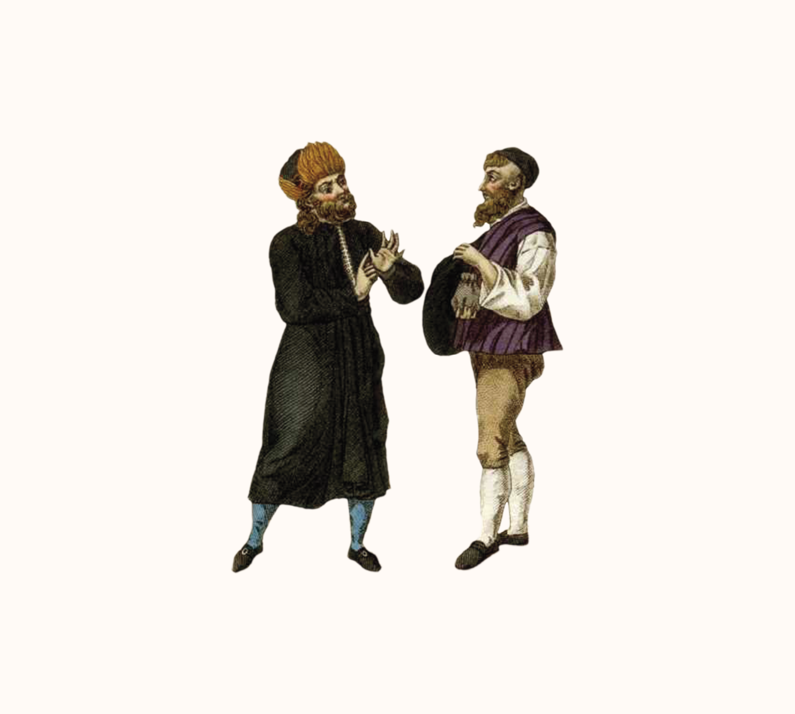
The Americanization of ShmuelCD, record and edition of 25 paintings. Released on El Gallo de Oro, 2025. -
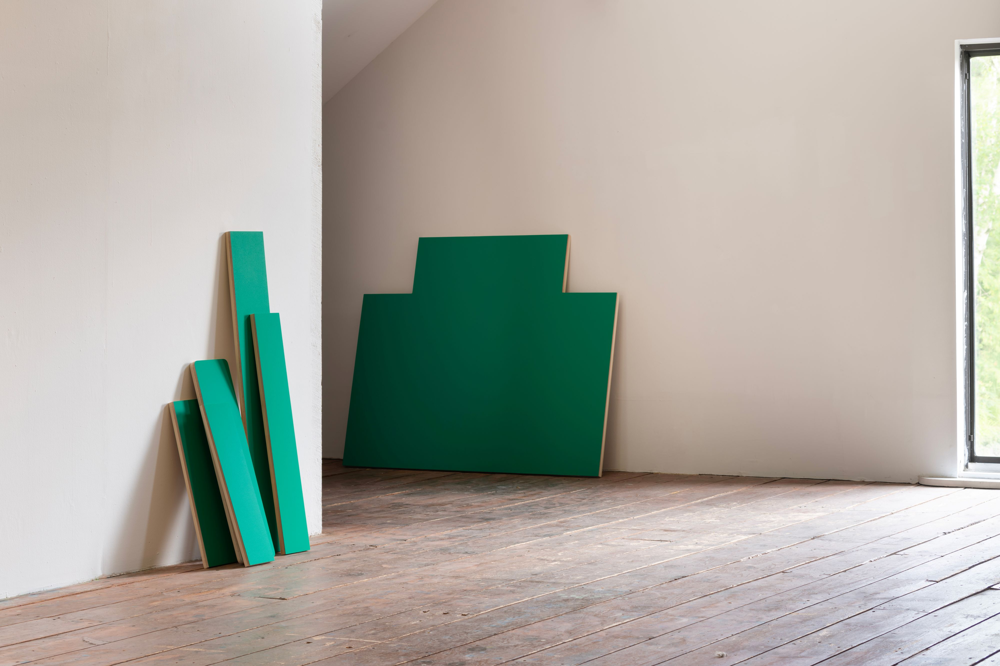
persimmon, chipmunk, hickory, squashSolo exhibition. Al Held Foundation, Boiceville, New York. Paintings and radio piece. 2024. -
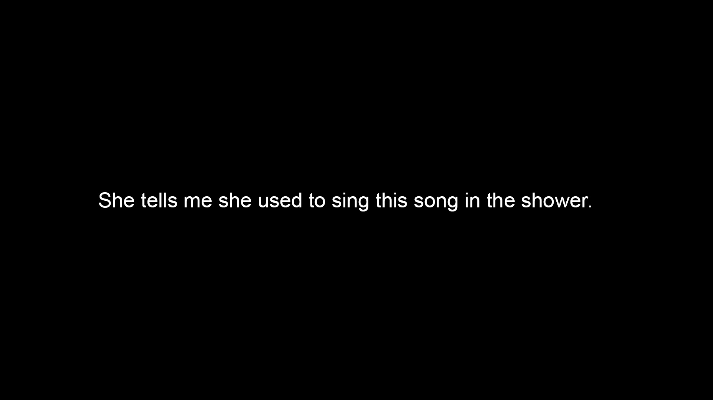
StayVideo, 6 minutes. 2023. -
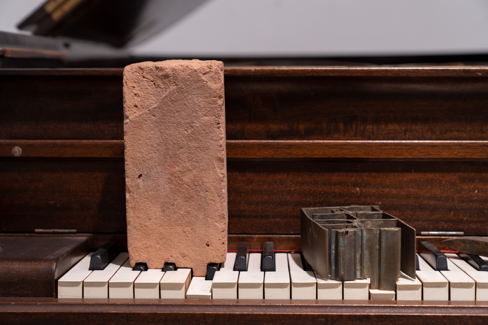
"I recognize the mountains."Mixed media installation. 60 minutes of sound. 2023. -
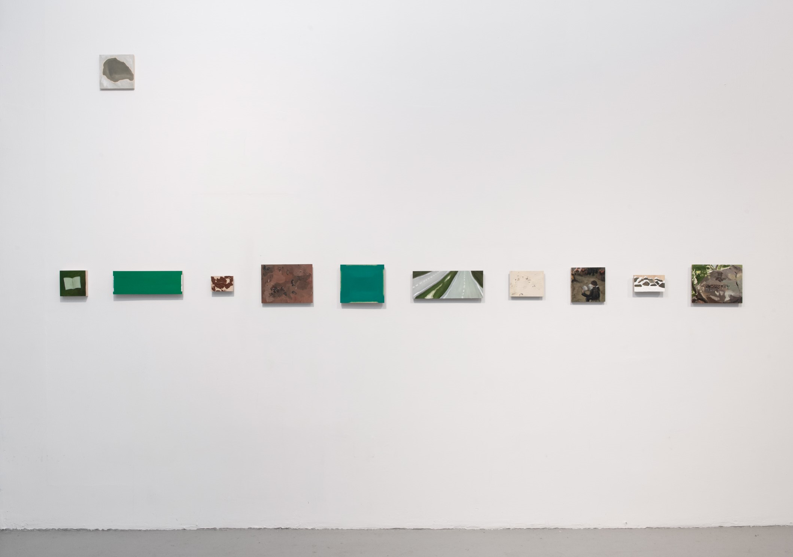
The weight of stones / the way in which winter / pushes up / these stones from the earth, / in fields / perpetually clearedOil paintings. 2023. -
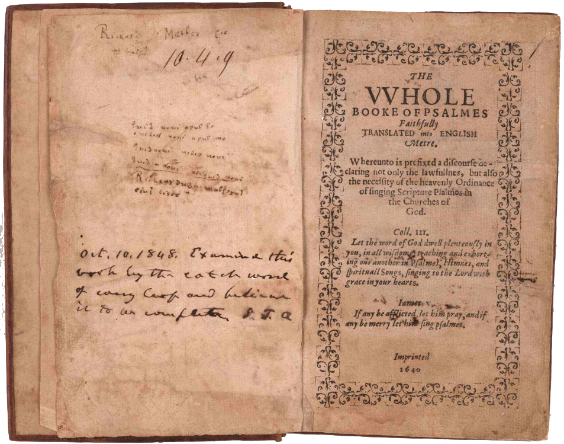
Y.D. 1640Performance. Voice and vocoder. 2022. -
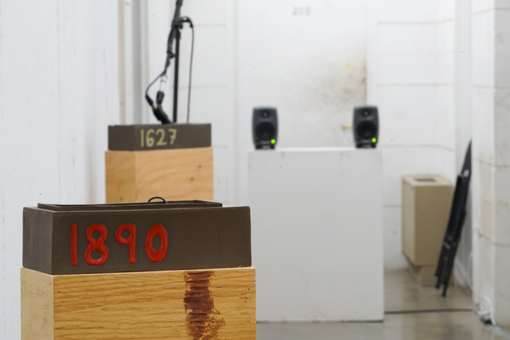
"One hearing or a century of hearings?"Sculptures and sound installation. 2022. -
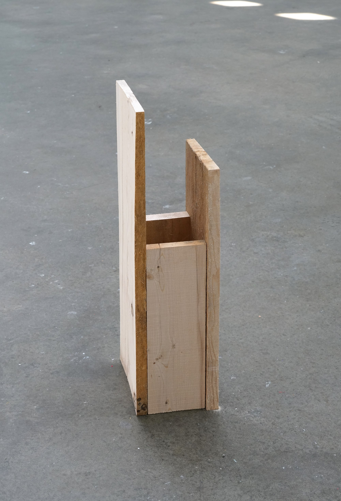
A Threshold DanceDrawings, sculptures, and sound installation. 2021. -
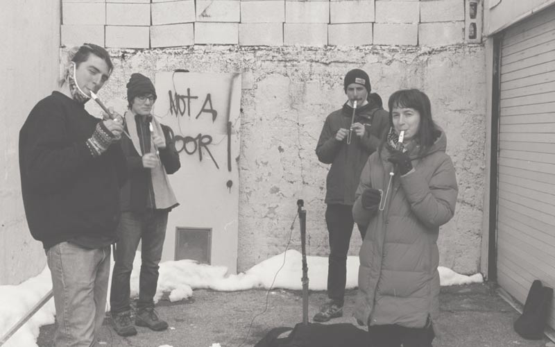
Carnival's Quarrel with LentCD released on edition wandelweiser. 2021. -
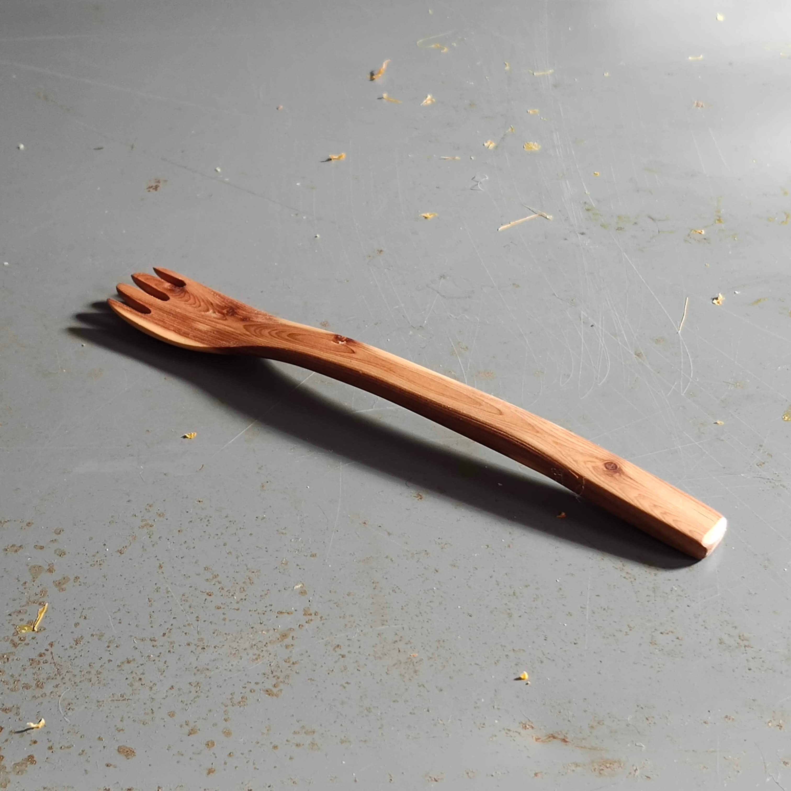
Sanded recording of a decadeAudio file, published by Non-Event. 2020. -
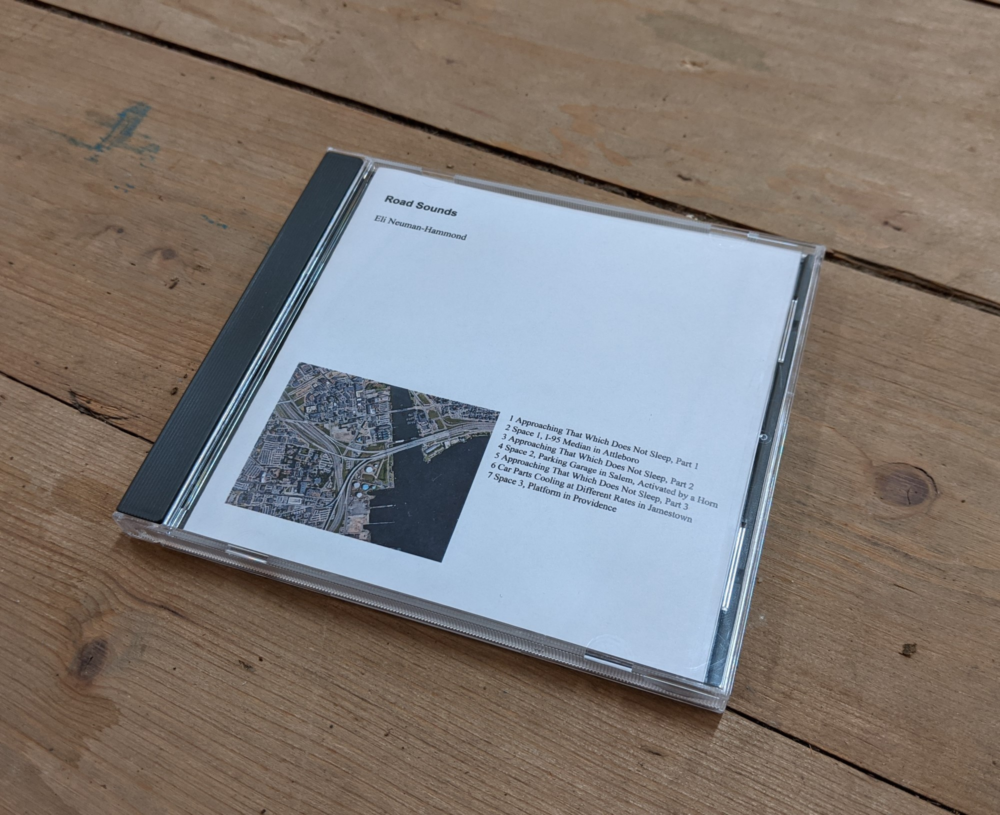
Road SoundsCD, self-released. 2019. -
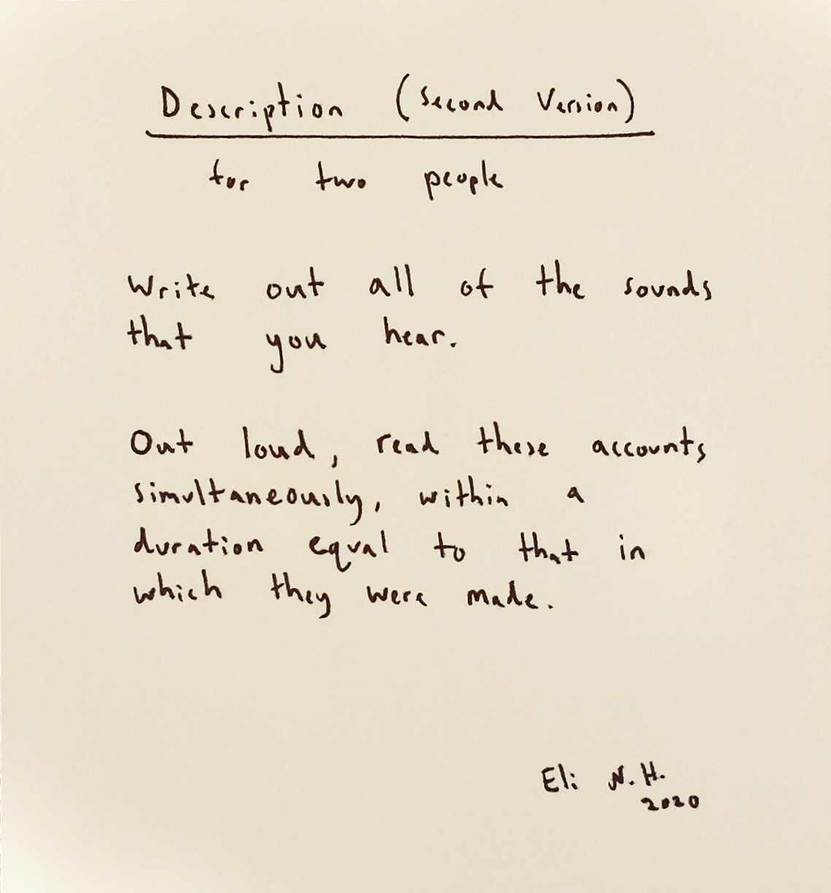
DescriptionScore. 2019. -
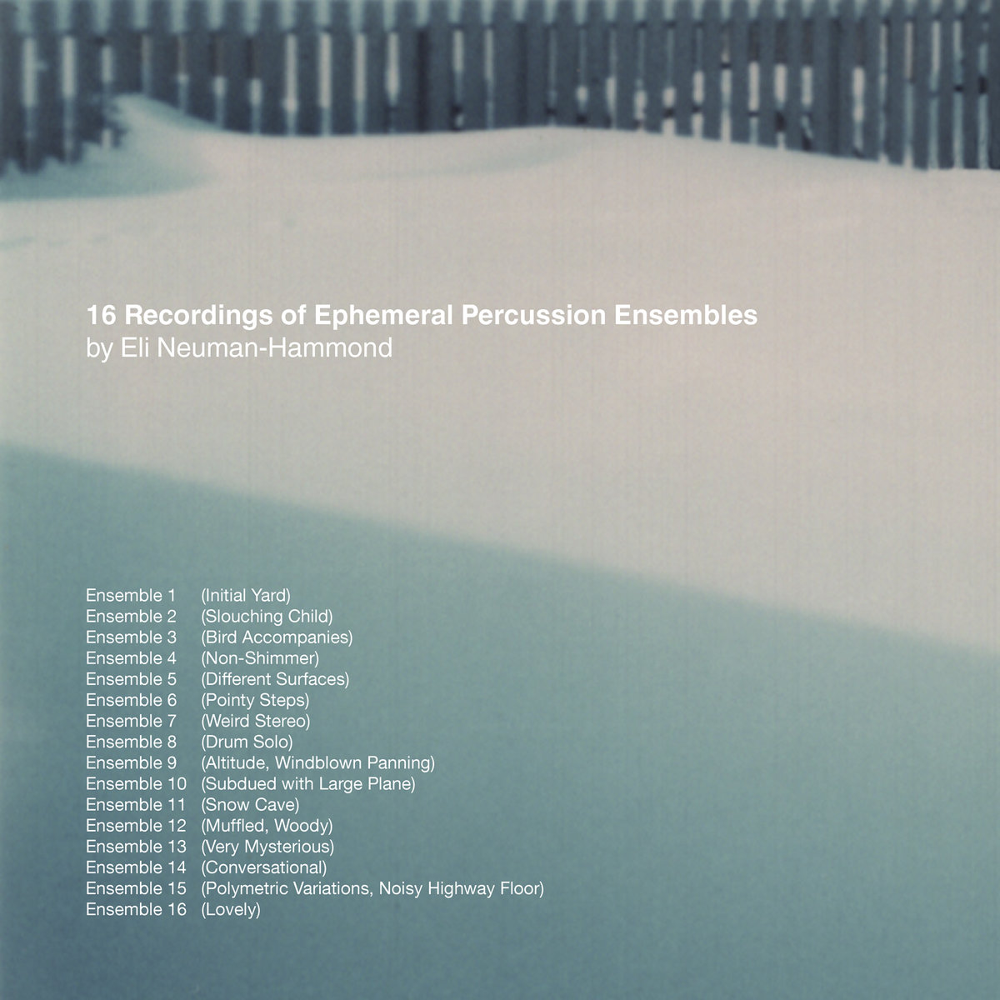
16 Recordings of Ephemeral Percussion EnsemblesAudio files released by and/OAR. 2019.